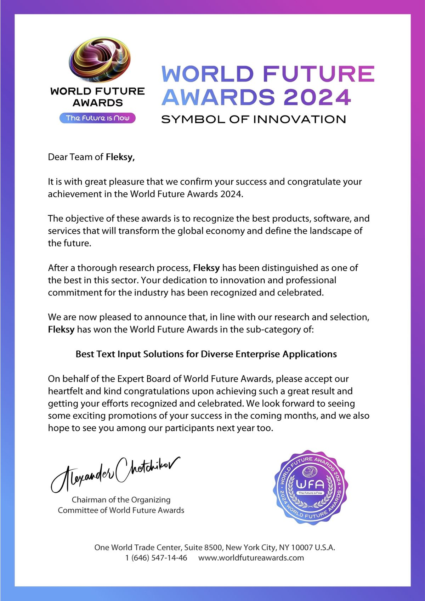
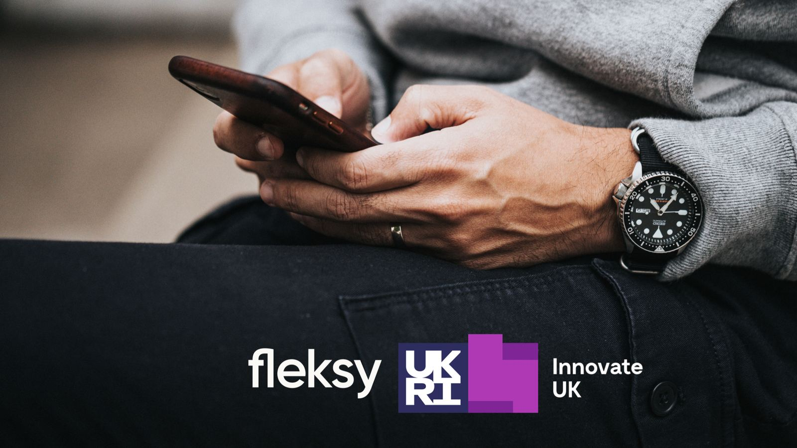
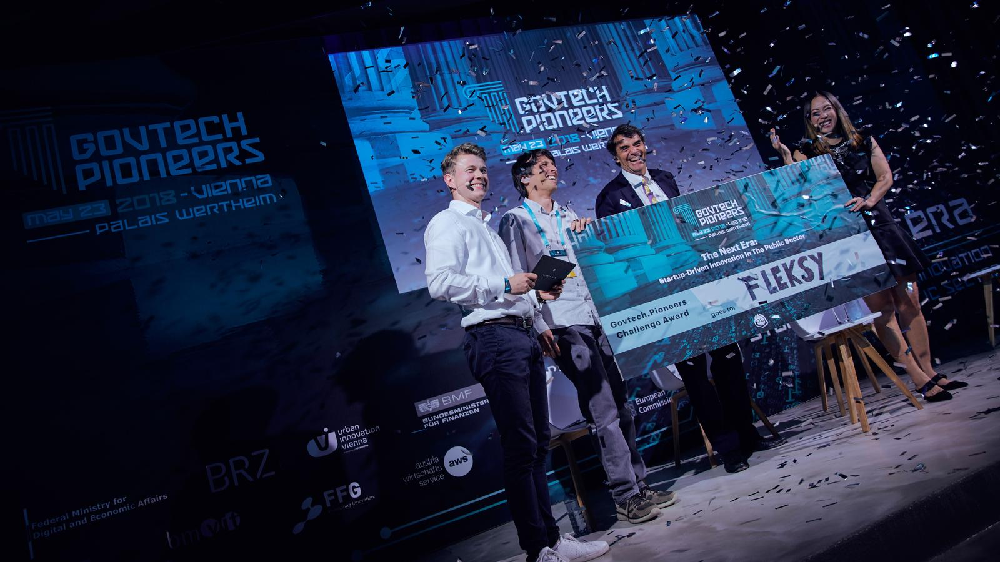
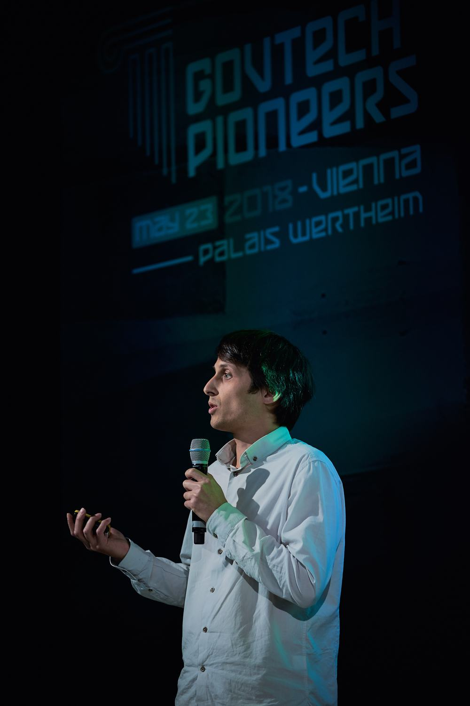
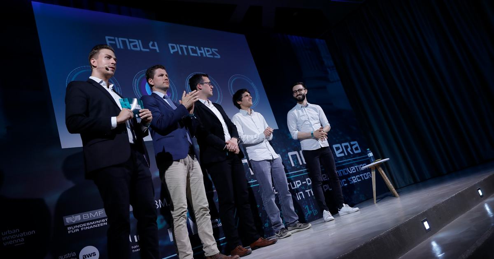
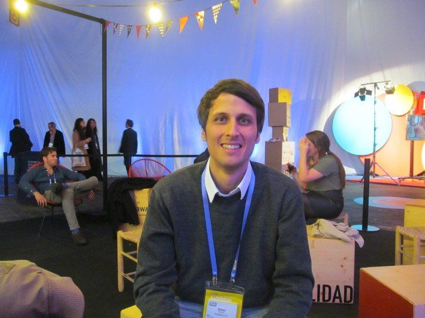

For more than twelve years I have worked on input technologies, mobile keyboards, and operating system software. I take a product from the roadmap to the user stories to the team that ships it.
GSMA
MWC
The Europas
InnovateUK
Betahaus

World Future Awards 2024. Letter to the Fleksy team for Best Text Input Solutions for Diverse Enterprise Applications.

Innovate UK and UKRI grant graphic, announced January 2024.

GovTech Pioneers, 23 May 2018, Vienna. Fleksy with the Challenge Award cheque.

GovTech Pioneers 2018. Pitching at Palais Wertheim, Vienna.

GovTech Pioneers 2018. The final four.

4YFN 2016, Disrupted by Mobile. Portrait with a conference badge.